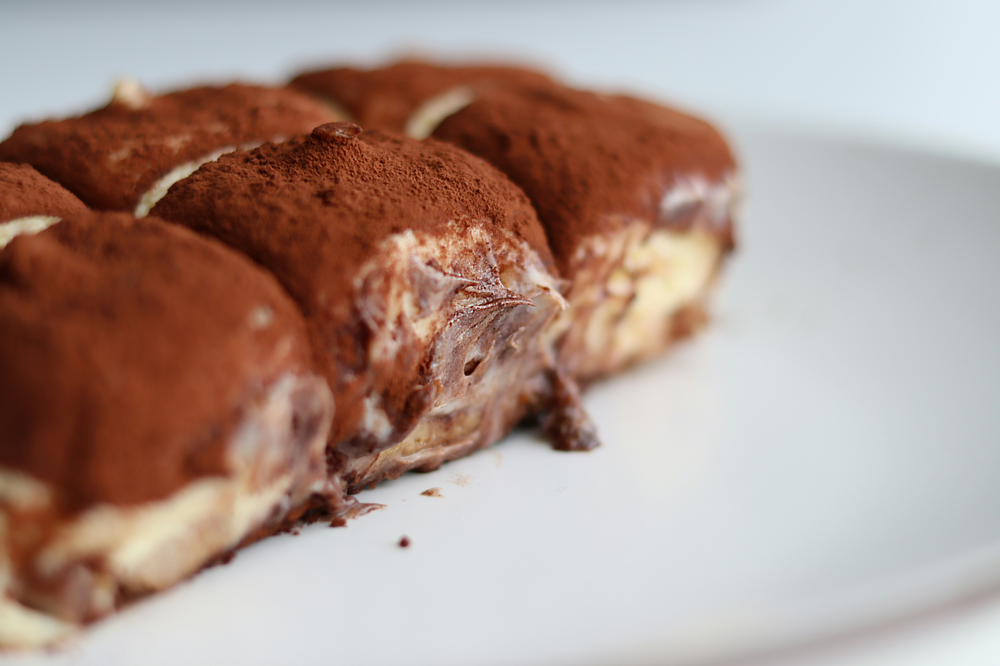

Tiramisu

Description
This recipe will teach you how to make tiramisu.
Tiramisu is an Italian dessert made with coffee-soaked ladyfingers (savoiardi) covered with a cream of egg yolks, sugar, mascarpone, and cocoa powder. It originated in northeastern Italy, and modern versions were popularized in restaurants from the late 1960s.
Ingredients
- Egg Yolks: Egg yolks are essential for a thick, rich, velvety smooth filling. Though some traditional recipes use raw eggs, this one doesn't — raw eggs carry the risk of food-borne illness.
- Sugar: White sugar is cooked with egg yolks and combined with mascarpone to create a sweet, creamy filling.
- Milk: Whole milk slightly thins the thick filling, resulting in a spreadable texture.
- Cream: Beat heavy cream until stiff peaks form to create an irresistible whipped cream.
- Vanilla: Vanilla extract adds subtle flavor to the homemade whipped cream.
- Mascarpone: Mascarpone, a creamy Italian cheese with a smooth texture and fresh taste, is a key ingredient in classic tiramisu.
- Coffee: Ladyfingers are soaked in strong, spiked coffee — this is what gives tiramisu its signature flavor.
- Rum: Rum is used to spike the coffee that will be drizzled over the ladyfingers. Some Allrecipes community members say they prefer Kahlua.
- Ladyfingers: Ladyfingers are small sponge cakes that are shaped like thick fingers. If you can't find ladyfingers at your grocery store, you can use pound cake cut into strips.
- Cocoa Powder: Finish off this decadent dessert with a generous dusting of cocoa powder.
Steps
- Step 1: Gather all your ingredients.
- Step 2: Whisk egg yolks and sugar together in a medium saucepan until well blended.
- Step 3: Whisk in milk and cook over medium heat, stirring constantly, until mixture comes to a boil.
- Step 4: Boil gently for 1 minute, then remove from the heat and allow to cool slightly.
- Step 5: Cover tightly and chill in the refrigerator for 1 hour.
- Step 6: Beat cream and vanilla in a medium bowl with an electric mixer until stiff peaks form.
- Step 7: Remove egg yolk mixture from the refrigerator; add mascarpone cheese and whisk until smooth.
- Step 8: Combine coffee and rum in a small bowl. Split ladyfingers in half lengthwise and drizzle with the coffee mixture. Arrange 1/2 of the soaked ladyfingers in the bottom of a 7x11-inch dish.
- Step 9: Spread 1/2 of the mascarpone mixture over the ladyfingers, then spread 1/2 of the whipped cream over top. Repeat layers once more.
- Step 10: Sprinkle cocoa powder over top.
- Step 11: Cover and refrigerate until set, 4 to 6 hours.
Enjoy!
Recipe source:Tiramisu by Christine
Tiramisu description source:Tiramisu article on Wikipedia
Home